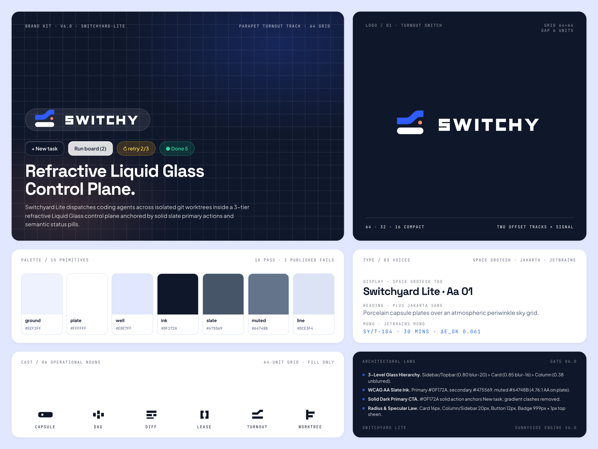

Refractive Liquid Glass Control Plane.
Built on Sunnyside Contract #19. Three calibrated glass elevations over a 4-stop mesh and fractal grain surface restore visual depth, WCAG AA legibility, and 60fps drag performance across Switchyard LITE.
Architectural Decisions
Why the flat pale-blue glass was retired in favor of a calibrated 3-level optical system.
Because: Uniform alpha across sidebar, columns, and cards flattened depth. Separating Level 1 chrome (0.80 blur-20), Level 2 columns (0.38 unblurred), and Level 3 cards (0.85 blur-16) makes hierarchy immediate.
Not when: Never blur columns—scrolling 7 columns with per-column backdrop-filter drops frames.
Because: The pink-purple prism gradient clashed with the cool mesh sky and competed with status indicators. Solid `#0F172A` (`#F8FAFC` in dark) anchors one unambiguous primary action.
Breaks next: Never place two `.btn.primary` CTAs inside the same toolbar row.
Because: Legacy `#8C9AB8` muted text failed at 2.55:1. Locking `#0F172A`, `#475569`, and `#64748B` yields 17.85:1, 7.58:1, and 4.76:1 on glass plates.
Rule: `slate-400` is banned for body copy in light mode.
Because: Fixed-axis icon centering + staggered label clip-fade eliminate sidebar collapse jitter, while `--glass-4` (0.92 blur-24) elevates Task Detail drawers cleanly above the board.
Shortcut: `⌘B` toggles sidebar; `⌘K` opens command palette.
Turnout Switch & 6-Mark Cast
Kuwayama 64×64 vector discipline with dedicated 16px compact geometry.

Contrast Ledger & CVD Safety
10 passing AA/AAA pairs + 3 published graphic-only fails. CVD min ΔE_OK = 0.084.
| Pair | Foreground | Background | Ratio | Gate | Permitted Role |
|---|---|---|---|---|---|
| ink on plate | #0F172A | #FFFFFF | 17.85:1 | AAA PASS | Card titles, primary headings, buttons |
| slate on plate | #475569 | #FFFFFF | 7.58:1 | AAA PASS | Snippets, body copy, metadata |
| muted on plate | #64748B | #FFFFFF | 4.76:1 | AA PASS | Task IDs, timestamps |
| accent on plate | #2563EB | #FFFFFF | 5.17:1 | AA PASS | In-progress status label & links |
| warning on plate | #B45309 | #FFFFFF | 5.02:1 | AA PASS | Review pill, WIP limit, retry 2/3 |
| danger on plate | #DC2626 | #FFFFFF | 4.83:1 | AA PASS | Blocked & Failed indicators |
| coral on plate | #FF8B6A | #FFFFFF | 2.29:1 | FAIL (Restricted) | Mark lock dot only — never text |
| mint on plate | #BCEFD4 | #FFFFFF | 1.28:1 | FAIL (Restricted) | Decorative wash only — pair with #059669 |
| line on ground | #DCE3F4 | #EEF2FF | 1.15:1 | FAIL (Restricted) | 1px structural borders only — never text |
4-Tier Optical Elevation
Calibrated opacity, blur, specular top highlight, and GPU-safe column restraint.
`0.80` alpha · `blur(20px) saturate(180%)` · `20px` radius
`0.38` alpha · No blur (60fps scroll/drag) · `20px` radius
`0.85` alpha · `blur(16px)` · `1px` top specular edge · `16px`
`0.92` alpha · `blur(24px)` · Detail sheet & dropdowns
Three-Role Typography
Space Grotesk display, Plus Jakarta Sans reading UI, JetBrains Mono tabular telemetry.
Tactile Glass Primitives
Production status pills, primary solid slate button, retry badge, and hover-lift card.
Day & Night Token Sheets
Canonical CSS custom properties from `web/src/glass.css`.
:root {
--glass-1: rgba(255, 255, 255, 0.80);
--glass-2: rgba(255, 255, 255, 0.38);
--glass-3: rgba(255, 255, 255, 0.85);
--glass-4: rgba(255, 255, 255, 0.92);
--text-primary: #0f172a;
--text-secondary: #475569;
--text-muted: #64748b;
--radius-card: 16px;
--radius-column: 20px;
--radius-button: 12px;
}
.dark {
--glass-1: rgba(15, 23, 42, 0.78);
--glass-2: rgba(15, 23, 42, 0.42);
--glass-3: rgba(30, 41, 59, 0.82);
--glass-4: rgba(30, 41, 59, 0.92);
--text-primary: #f8fafc;
--text-secondary: #cbd5e1;
--text-muted: #94a3b8;
--glass-border: rgba(255, 255, 255, 0.14);
}